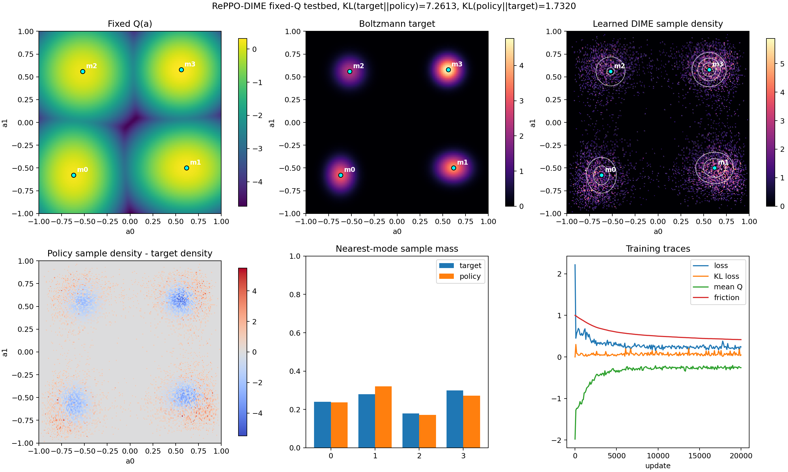

RePPO-DIME Multimodal Q Testbed
Static one-state analytic-Q testbed. DIME does not expose mixture experts, so the learned policy density is estimated from samples.

Static one-state analytic-Q testbed. DIME does not expose mixture experts, so the learned policy density is estimated from samples.
